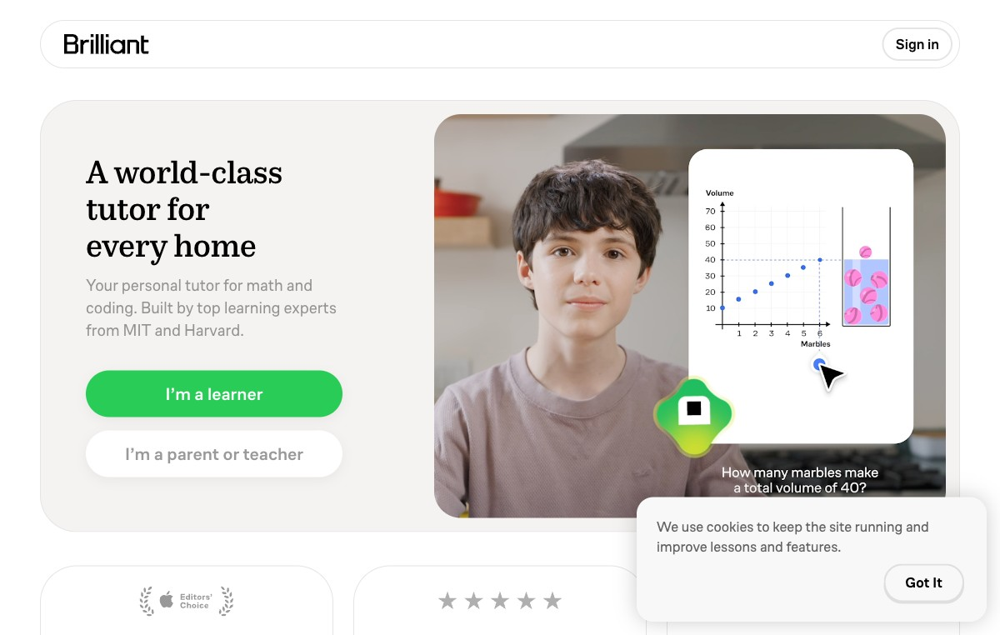
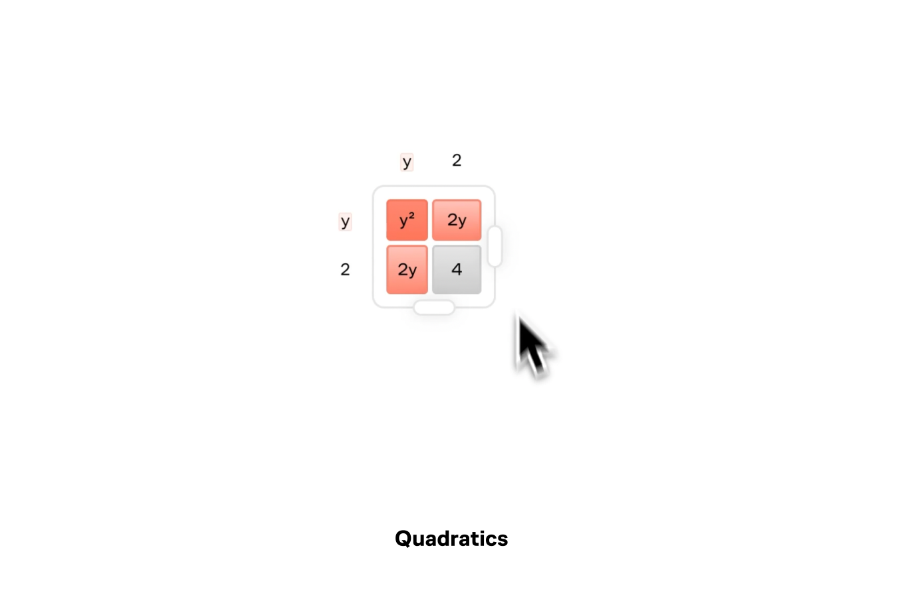
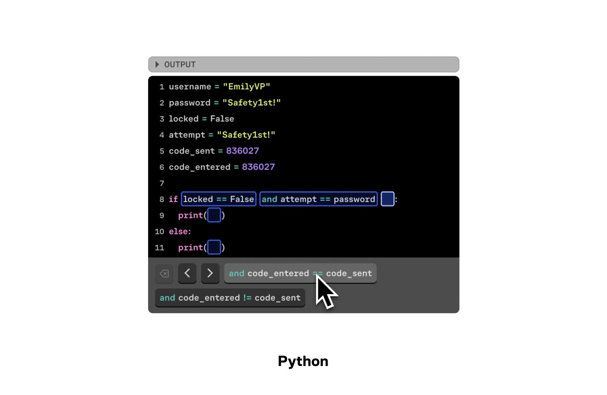
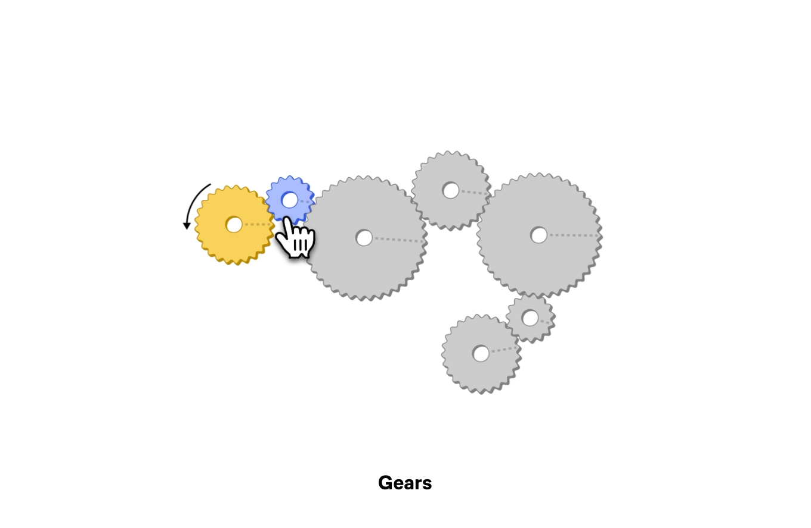
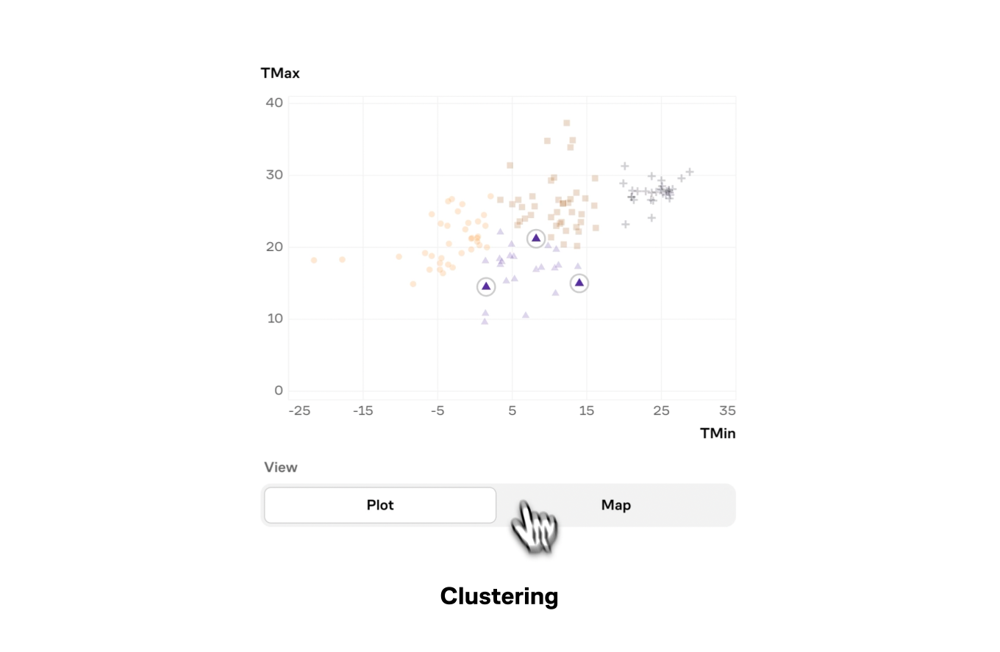

Brilliant：用十年学习数据
喂养出的 AI 图形化导师
一家成立于 2012 年、累计千万级用户的交互式 STEM 学习平台，2026 年 5 月推出"全球首个 AI 图形化导师"Koji——一位坐在你身边、陪你画图、引导你思考、却绝不直接给答案的"超级耐心老师"。本报告覆盖公司背景、创始人、核心产品、用户人群、商业模式、融资、竞品与口碑。
00速览摘要
如果只有 90 秒，这是你需要知道的关于 Brilliant 与 Koji 的全部。
🏢 它是什么
主打"做中学（Learn by doing）"的交互式 STEM 在线学习平台，覆盖数学、编程/CS、数据科学、科学四大类，用交互动画+习题+可视化模拟替代传统"看视频"。公司主体 Brilliant Worldwide, Inc.，总部旧金山，约 100+ 人，未上市。
👩💼 谁创立的
韩裔创始人/CEO Sue Khim，芝加哥大学数学专业辍学创业，先做助学贷款工具 Alltuition，2012 年转型 Brilliant，入选福布斯 30 under 30。理念："AI 正在让孩子变笨，它本应让他们变成天才。"
🤖 Koji 是什么
2026-05-29 推出的"全球首个 AI 图形化导师"。能实时"看到"你的屏幕，直接在题目上画线/标注/高亮，左语音讲解+右动态图，用苏格拉底式提问引导你自己想通，"Speak First"主动开口降低求助门槛，绝不直接给答案。
💰 怎么赚钱
对标 Duolingo 的 freemium 订阅制。免费版每天 2 把"钥匙"+广告+须按顺序；Premium 解锁全部课程+无广告+Koji 全功能。美区个人年付约 $161.88，含 6 席家庭版；订阅约占营收 85%。
👥 谁在用
从 10 万 → 1000 万+ 用户。重心其实偏成人自学者(约45%)与科技职场人(约30%)，K12+大学生约 25%。男性约 57%，主力 18-24 岁；美国第一大市场（约33%流量），印度/英国/新加坡跟随。
⚔️ 护城河 vs 风险
护城河=十年自有数学/编程学习数据 + 代码化课程 + 不给答案的教学叙事。风险=对手 Khanmigo（免费）、Duolingo（1.28亿MAU）规模碾压，且正反向切入数学腹地；自动续费投诉持续侵蚀口碑。
01公司背景
从一个简化助学贷款的小工具，到千万用户的 STEM 学习帝国。
| 维度 | 信息 |
|---|---|
| 公司名称 | Brilliant（品牌/网站 Brilliant.org），主体 Brilliant Worldwide, Inc. |
| 成立时间 | 2012 年（前身 Alltuition，2012 年 10 月正式转型为 Brilliant）已核实 |
| 总部 | 美国加州旧金山（550 Montgomery Street, Suite 800, San Francisco, CA 94111） |
| 性质 | 私营公司（Private），未上市，处于 Pre-IPO 阶段（二级市场 Forge/EquityZen 有股权交易） |
| 业务 | 交互式 STEM 在线学习：数学、计算机科学/编程、数据科学、科学与技术（含 AI/神经网络/LLM） |
| 团队规模 | 约 100+ 人（不同口径 79–116 人），横跨五大洲 |
| 使命 | "Making a world of great problem solvers（培养满世界的优秀问题解决者）" |
独特的"跨界混编"团队
Brilliant 官方 About 页强调其团队构成极不寻常，这正是其内容质量与叙事能力的来源：
🧮 学术硬核
多位国际数学奥林匹克(IMO)奖牌得主；MIT/Caltech/Stanford/Harvard 的博士与辍学生。
🎨 创意叙事
前《洋葱报》(The Onion)主编、戛纳狮子奖得主、漫威(Marvel)针织服装设计师。
✍️ 内容能力
亚马逊年度畅销书排行榜前 50 名作家——把抽象 STEM 讲得有趣的底气。
方法论壁垒：教学法实验飞轮
Brilliant 十余年只打磨一个方法论——Learn by doing。每日海量答题数据 → 快速 A/B 测试教学方案 → 迭代课程，形成"教学法实验飞轮"。这套代码化（code-based）的交互课程基础设施 + 数十亿次真实学习交互数据，正是日后 Koji 得以"看懂屏幕、精准定位卡点"的底层资产。
02发展时间线
14 年，从助学工具到 AI 导师的演进轨迹。
03创始人 Sue Khim
一个在芝加哥公立学校长大的韩裔移民，如何用"做中学"打了十几年的持久战。
个人画像
- 族裔与出身：韩裔，襁褓中随家移民美国，在芝加哥读公立学校长大（出生约 1986 年）。曾自述"家庭一度陷入严重财务困境"，靠学编程赚钱补贴家用。
- 教育：芝加哥大学攻读数学专业，约 3 年后辍学创业 已核实（注：另有"医学院"说法已被证伪）。
- 入行技术：实习时为把分配的活儿自动化，熬夜自学 Excel VBA 宏——自述入行原因是 "Necessity!（或许是懒惰）"。
- 荣誉：福布斯 30 under 30（教育）；2022 年被 Apple 列为 4 位 AAPI 科技领袖之一。
教育哲学
- 核心方法论："learn by doing（做中学）"——围绕这一单一理念打磨十余年。
- 三大目标：① 激发内在学习动力；② 培养批判性思维；③ 消除对"不知道答案"的羞耻与焦虑。
- TEDx（2013）核心论点：智力天赋应像运动天赋一样被系统化发现和培养。用"新加坡 vs 牙买加"案例论证教育投资回报，批评美国每 $100 教育支出仅 2 美分用于天才生项目。
- STEM 女性倡导：面向约 250 万女性用户，推崇居里夫人、Grace Hopper、Maryam Mirzakhani 等榜样。
04核心产品 Brilliant
不是"看视频再练习"，而是"先做题、在交互与可视化中建立直觉"。
四大学科板块
🧮 数学（最深领域）
算术/前代数/代数/几何/三角/微积分/微分方程/线性代数/数论/离散数学/统计。
💻 编程 / 计算机科学
Python 编程、编程思维、算法与数据结构、AI 原理、计算机内存、软件工程、神经网络。
📊 数据科学 / 数据分析
数据分析、统计、概率、数据可视化——使用 Airbnb、Spotify 等真实公司数据集实战。
🔬 科学与技术
经典力学、物理、机器学习、大语言模型(LLM)、数字电路、量子计算、加密货币/区块链。
课程规模：官方现行 subscribe 页表述 40+ 门交互式课程口径不一，部分第三方称 100+ 门；均按 Beginner/Intermediate/Advanced 技能分级，而非按学校年级。
vs 可汗学院（Khan Academy）
| 维度 | Brilliant | Khan Academy |
|---|---|---|
| 学习哲学 | 做中学：先做题，靠交互/可视化建立深层理解 | 看中学：先看视频讲解，再重复练习 |
| 内容广度 | 聚焦数学/CS/逻辑/物理的深度问题解决 | K-12 全科 + AP/SAT 备考，覆盖更广 |
| 价格 | Freemium（免费层受限 + 付费 Premium） | 完全免费 |
| AI 导师 | Koji（嵌入课程、能看屏幕、不给答案） | Khanmigo（通用对话助手） |
共识：许多家庭两者并用——可汗用于广泛作业支持，Brilliant 用于建立概念深度与 STEM 热情。
克制式游戏化（习惯养成引擎）
🔥 连胜 Streak
每天完成 3 道题或 1 节课即可续上；漏天归零（有 streak charge 可保），制造"不想断签"的损失厌恶。
⭐ 经验值 XP
完成课程/解题获得，数额对应投入；重复已完成课程不再得 XP。
🏆 联赛 Leagues
每组恰好 30 人，每周日重置，按周 XP 升降级。10 级以化学元素命名：氢→锂→碳→氖→钛→氙→钡→钕→钨→锿。
第三方分析指出：Brilliant 刻意只保留 Streak 与 Leagues 两个核心回路，不堆砌过多激励，把焦点留给内容本身。平台支持 iOS/Android/浏览器，当前课程需联网、不支持离线下载。
05Koji · AI 图形化导师
"一位坐在你身边、陪你画图、引导你思考的超级耐心的老师。" 这是 Brilliant 对 AI 时代的回答。
六大核心机制
① 实时看屏 Visual Awareness
能"看到"屏幕上每一次选择与停顿点，精准定位误解出在哪一步——看到"课程里发生的每一件事"。
② 画线 / 标注 / 高亮
能"伸手进课程内部"：高亮某个区域、在图上标注画线、临时插入互动小问题。"He points, sketches, annotates（指点、勾画、标注）"。
③ 左语音讲解 + 右动态可视化
双轨形态：语音讲解 + 实时操纵学习环境（高亮/重排组件），把抽象概念具象化。
④ 苏格拉底提问法
"asks instead of tells（多问而非多讲），builds confidence instead of dependency，never, ever just hands you the answer"——绝不直接给答案。
⑤ Speak First 主动发言
每节课页开头主动开口——不是朗读题目，而是"注意到"：相比上题变了什么、动手前哪里值得留意。把求助门槛降到最低。
⑥ 退后/介入的分寸感
概念学习阶段给更多帮助，接近掌握时主动退后——动态调节介入强度，避免养成依赖。
底层技术与安全
- 专有数据：训练于数十亿次真实学习交互 + Brilliant 十年学习数据——这是纯套壳 GPT 不具备的资产。
- 准确性：课程为代码化（code-based），保证 AI 介入时的准确性，数学错误率与人类内容创作者相当。
- 大模型：官方未点名具体底层大模型，仅称在所用模型上"开启了高级安全过滤器"，对任何问题对话设实时告警。
- 合规：符合 COPPA（美国儿童隐私），第三方聊天处理为零数据留存。
- 训练专家："由 MIT 和 Harvard 学习专家训练" 第三方报道·官方博客未见原文
覆盖、定价与计划
📚 课程覆盖
上线即覆盖几乎所有基础数学与编程课程（代数/几何/算术/Python/递归/算法）；微积分等进阶课程 2026 年晚些时候上线。
💵 定价
含在所有 Premium 套餐内；免费版仅有限预览。Sue Khim 称折合每天不到 $1，远低于人类辅导约 $300/小时。
🎁 1000 名免费计划
2026 夏为前 1000 名学员免费辅导，家长可留言孩子学习目标获邀。第三方
早期反响：79.5% 正面，但有专业质疑
未来规划
① 学校作业辅导：未来能针对学员具体的学校作业辅导，成为更长学习旅程的向导；② 多语言：语音已能说几乎任何语言，课内深度多语言支持"即将到来"；③ 课程扩展：微积分等进阶课程 2026 年内陆续上线。
▶产品原型 · 上手体验
下面依次是 Brilliant / Koji 的真实官方产品画面，以及文末一个可亲手操作的 Koji 学习原型——拖滑块、点按钮、甚至试试"直接要答案"，感受"看屏幕 + 画图 + 苏格拉底式不给答案"到底是什么体验。
📦 视频/图片为 Brilliant 官方素材，已随报告下载至同目录 Brilliant调研_assets/ 文件夹（移动报告请连同此文件夹一起移动）。若视频不自动播放，点一下即可；个别浏览器(旧版 Safari)可能不支持 webm。
① 官网真实首页

② Koji 实际辅导演示 官方循环动画
③ "做中学"的产品动效（官网三大卖点）
玩着玩着概念就通了，而非死记。
问对问题，直击你卡住的地方。
会的加速、不会的放慢。
④ 四大学科的交互课程

🧮 Math 数学
💻 Computer Science
🔬 Science 科学
📊 Data Analysis⑤ Koji 的四条教学铁律（官方设计原则）
Socratic questions only —— 只用苏格拉底式提问。
Honor their thinking —— 哪怕是错的答案，也有有价值的东西。
那会贬低他正在经历的努力与挣扎。
别说"它的意思是…"，而要问"那这说明了什么？"
⑥ 🕹️ 亲手玩：Koji 互动原型 · 斜率小课 可操作
这是我按 Koji 的产品逻辑手写的高保真原型（非官方）。拖动右侧滑块改变直线陡峭程度，看 Koji 怎么"看着你做"；点下面的按钮和它对话——特别是试试那颗 "直接告诉我答案" 按钮。
💡 体会到了吗：Koji 全程不给你"斜率=1"这个答案，而是把 rise/run 的三角形画给你看、反问你，逼你自己说出那声"啊哈"。这正是它对抗"AI 让孩子变懒"的核心设计。
06用户人群与规模
名义上是"给孩子的导师"，实际重心却在成人自学者与科技职场人。
人群画像要点
- 重心偏成人/职场，而非 K12：终身学习者约 45%（25–50 岁、本科以上、可支配收入较高，增速最快、LTV 最高）；科技职场人士约 30%（开发者/数据科学家/工程师）；学生约 25%（K12+大学，历史约 60% 男性）；B2B 企业客户同比约 +40%。
- 人口统计：访客约 57% 男性 / 43% 女性；最大年龄群体 18–24 岁。
- 地域：美国第一大市场（约 33% 流量、约 35% 收入），其后蒙古 7.6%（异常偏高）、印度 5.9%、新加坡 5.3%、英国 3.7%。
- App 表现：App Store 4.7 星（约 2.8 万评分）、Google Play 4.6 星（约 7.5 万评价）；Sensor Tower 估美区月下载 iOS 约 6 万 + Google Play 约 10 万。
- 教育优惠：合格 K-12 师生通过 Brilliant for Educators 可免费获得 Premium。
⚠️ 人群占比（45/30/25%）来自商业分析博客估算，非官方数据；付费订阅的绝对数字公司从未披露。
07商业模式与定价
把 Duolingo 的游戏化留存引擎，搬到了高客单价的严肃 STEM 自学场景。
Freemium 三档结构
注：价格按地区本地化。下方为美区第三方交叉口径；2026-06-05 一手抓取的新加坡区为 月 SGD 40 / 年 SGD 25/月 / 家庭 SGD 150。同期另存在 $24.99 月 / $299.88 年 的历史版本，属时间/地区差异。
个人 · 月付
- 全部课程无限访问
- Koji 完整功能
- 无广告
- 可任意跳学
个人 · 年付
- 个人月付全部权益
- 一次性支付更划算
- 7 天 Premium 免费试用
- 新内容持续更新
家庭版 Family
- 适合家庭/学习小组
- 各成员独立进度
- 团队版(Group)3 席起约 $407.88/年
- 美元价仅结账页展示
免费版 vs Premium
| 权益 | 免费版 Free | Premium 付费版 |
|---|---|---|
| 每日学习量 | 每天 2 把钥匙（各解锁 1 节课/练习） | 无限制，想学多少学多少 |
| 学习顺序 | 必须按顺序，不能跳学 | 任意跳到任意课程任意一节 |
| 广告 | 课间有偶发广告 | 全平台完全无广告 |
| AI 导师 Koji | 仅有限预览 | 完整无限访问 |
| 课程数 | 受限预览 | 解锁全部 40+（部分页称 90+）课程 |
📈 营收结构（估算）
个人/家庭订阅约占 85%；Brilliant for Teams（企业/机构）约占 15%，提供多年合同带来收入稳定性。
🆚 与 Duolingo 对比
同样 freemium + 钥匙/生命值限制 + streak/XP/联赛；但 Brilliant 定价高约 59%（约 £144/年 vs £59/年），定位"严肃 STEM"而非语言，用更高客单价覆盖更窄但付费意愿更强的人群。
08融资与估值
14 年累计约 $94.6M，估值从 560 万美元长到 3.05 亿美元——但增长并不线性。
| 时间 | 轮次 | 金额/估值 |
|---|---|---|
| 2011-03 | 种子轮 | ~$0.91M · 估值 ~$5.6M |
| 2012-08 | Series A | ~$2.94M · 估值 ~$17M |
| 2013-08 | Series A-1 | ~$6.27M · 估值 ~$39.6M |
| 2015-06 | Series B | ~$11.21M · 估值 ~$87M |
| 2018-06 | Series B-1/B-2 | ~$8.31M |
| 2019-04 | 里程碑 | 累计 ~$27M · 估值 ~$50M |
| 2022-05 | Series C/C-1 | ~$65M · 估值 ~$304.8M |
主要源 Forge Global，并与 Wikipedia/Crunchbase 交叉印证；Crunchbase 明细页返回 403，融资细节主要依赖 Forge 单一权威源。
关键投资方
早期穿越多轮
Kapor Capital、Hyde Park Angels、Social+Capital（Chamath Palihapitiya）、500 Startups、Learn Capital。
成长期
Next Play Ventures（与 LinkedIn 创始人 Reid Hoffman 关联，2015 Series B）。
Series C（2022）
Union Square Ventures(USV)、Reach Capital（教育科技基金）、Nimble Partners、KD Capital。
09竞品与行业格局
一个 5 年翻 2.4 倍的赛道，但 Brilliant 在规模上比对手小一个数量级。
核心竞品对标
| 玩家 | 定位/规模 | 与 Koji 的关系 |
|---|---|---|
| Khanmigo 可汗学院 | GPT-4 苏格拉底式对话辅导，K-12 公认领先；走免费/公益路线 | 最大正面对手。是通用对话助手，未与学习环境深度集成；Koji 则嵌入课程、能看屏幕画图 |
| Duolingo Max | 1.28 亿 MAU、付费订户 1090 万；AI agent 2026 贡献 30%+ 营收 | Brilliant 商业模式的"原型"，但已并入 Math 课程，正面切入数学腹地，分发碾压 |
| Synthesis Tutor | 高端进阶、多感官、对神经多样性友好；约 $300/年 | 偏低龄视觉化启蒙，与 Brilliant 青少年-成人深度学习不完全重叠 |
| Photomath | 拍照即给解题步骤，2023 被 Google 收购 | "直接给答案"路线，与 Koji 哲学正相反，是其营销对照组 |
| Chegg | 答案/解题库，2025Q2 订阅营收暴跌 -39%、订户 -40% | 反面教材：单纯"提供答案"的护城河被 LLM 瞬间击穿 |
✓ 护城河
- 十年自有交互学习数据，纯套壳 GPT 不具备
- 产品级深度集成 + 图形化交互（看屏幕、画图标注）
- "不给答案 + MIT/Harvard 训练"的可持续教学叙事
- 基础数学到大学微积分的内容厚度
✗ 风险
- 规模/分发劣势：用户/营收/团队比对手小一个数量级
- 价格更高、付费墙更硬，在免费 LLM 替代品前性价比感知弱
- Google（已吞 Photomath）、Duolingo（已并入数学）正面碾压
- "图形化导师"是可被复制的交互形态，先发窗口期有限
10用户口碑
"内容体验好评 + 商业模式差评"的鲜明割裂。
👍 高频好评
- 交互式"做中学"是最大卖点："让你思考而非只看视频""通过可视化建立直觉"。
- 趣味性/习惯养成：连胜、经验值、联赛让人"上瘾"。
- 界面体验：干净、直观、易导航。
- 客服口碑突出：反应快、肯帮忙，部分账单问题被迅速甚至"破例"解决。
👎 两大痛点
① 订阅与退款（最尖锐）
这是 Brilliant 口碑最大软肋。BBB 三年 66 起投诉（产品 48/账单 8/服务 7），未获 BBB 认证。共性：扣款前无提醒、试用默认转年付、退款标"不可退"、网站找不到取消按钮。
② 内容深度与难度
"有点肤浅、习题太简单""知识往往很表层，难以迁移到平台之外""交互大多只是拖滑块"。宣传"15 分钟一课"，但卡住时实际会拉长到 30–45 分钟。
| 平台 | 评分 | 样本量 | 倾向 |
|---|---|---|---|
| App Store（美区） | 4.7/5 | ~2.8 万 | 最正面，赞交互"做中学" |
| Google Play | 4.5–4.6/5 | ~7.5 万–10 万 | 正面，赞习惯养成 |
| Trustpilot | 4/5 | 2700+ | 偏正面，投诉集中扣费 |
| BBB | 未认证 | 66 起投诉 | 负面，账单/产品纠纷为主 |
11综合研判
站在教育从业者视角，Brilliant 与 Koji 给我们的启示。
✅ 它做对了什么
- 十年只磨一个方法论："做中学"+代码化交互课程，沉淀出别人抄不走的学习数据资产，AI 时代直接变现为 Koji 的壁垒。
- 教学法叙事踩中时代痛点：在"孩子用 AI 作弊、判断力退化"的集体焦虑下，"引导思考而非替你思考"是极强的差异化定位。
- 产品形态创新：从"对话框旁路"升级到"看屏幕+画图标注"的图形化导师，把 AI 真正嵌进了学习环境。
⚠️ 它的隐忧
- 规模与分发的代差：面对 Khanmigo（免费）和 Duolingo（1.28 亿 MAU 且已切入数学），垂直精品的获客天花板明显。
- 口碑的"暗黑模式"债务：自动续费投诉若不解决，会持续对冲产品力带来的信任。
- 内容深度争议："轻量、难迁移"的批评，限制了它从"兴趣补充"走向"主力学习"。
- Koji 效果待独立验证：当前口碑仍以官方/媒体转述为主，专业人士已对其 demo 的教学有效性提出质疑。
12数据存疑与来源
诚实标注每一处不确定性，是调研报告的底线。
需要打星号的数据
| 事项 | 状态 | 说明 |
|---|---|---|
| 用户数"超 400 万" | 已过时 | 系 2017 年旧口径；当前应为 1000 万+（180 国） |
| Koji 发布时间 | 2026-05-29 | 原素材误记 2025；官方博客+多媒体均为 2026 |
| "2019 年融 2700 万" | 口径存疑 | 更可能是截至 2019 累计融资额，非单笔新轮 |
| 2019 ARR >$10M | 未经一手验证 | 仅第三方/背景文章引用，权威库未列 |
| 课程数量 | 口径不一 | 官方现行 40+，部分第三方称 100+ |
| Koji "MIT/Harvard 训练" + "1000 人免费" | 第三方 | 官方博客正文未核到原文 |
| 人群占比 45/30/25% | 估算 | 来自商业分析博客，非官方 |
核验方法：9 路 AI Agent 并行 WebSearch/WebFetch 交叉比对，叠加 2026-06-05 用 Playwright 对 brilliant.org 首页与 /subscribe 页的一手实时抓取（故定价显示新加坡区 SGD），最后由独立 Agent 做事实核查。最稳一手证据：Koji 官方博客、官方 subscribe 页、Forge Global 融资史。